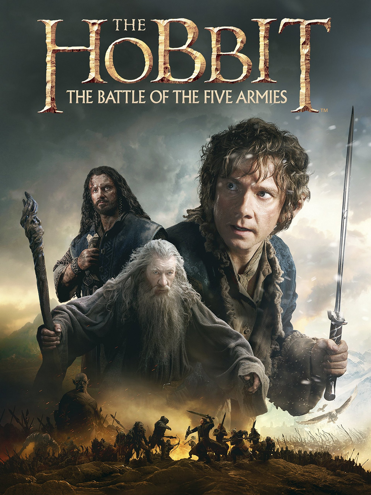
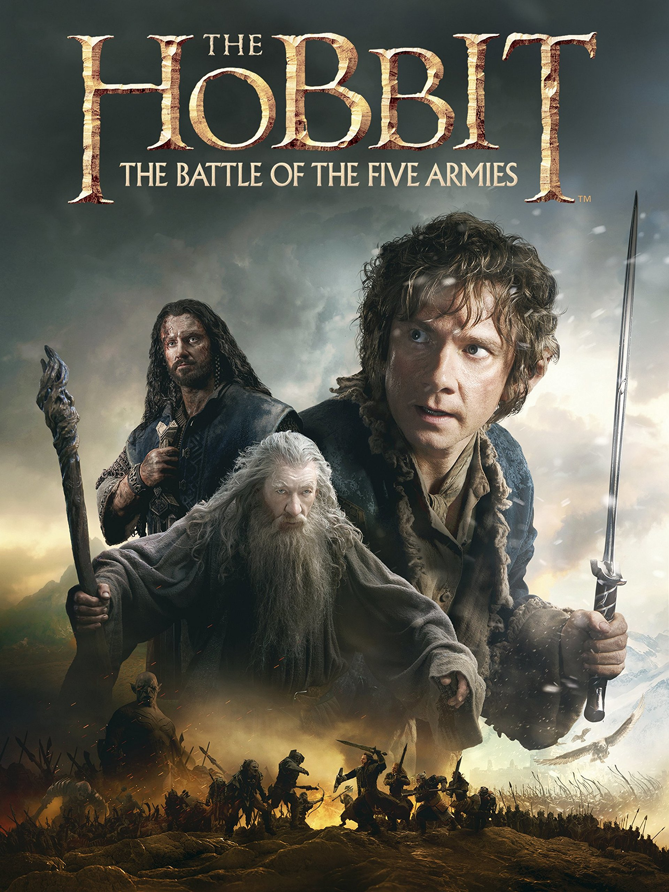

Hollywood turns plenty of books into films, and moviegoers flock to them.


 



Since 2010, 21 movies that hit the box office top 10 the year they were released were based on novels or nonfiction books.